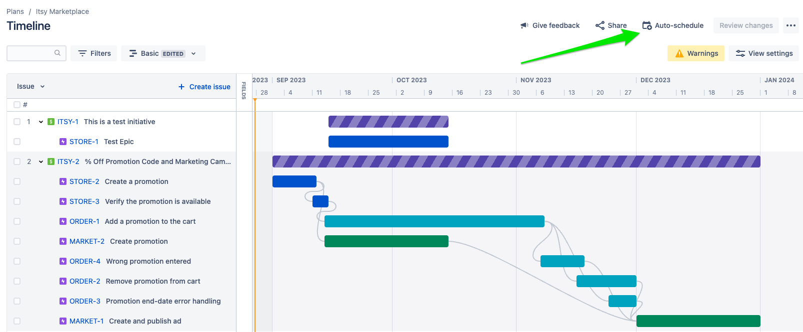

Scheduling page
Learn how to schedule epics into sprints with Advanced Roadmaps' Auto-scheduler.
Overview
In this section you will learn how to set-up and use the Auto-schedule feature of Advanced Roadmaps.

The Auto-schedule feature can move epics into sprints based on dependencies and team velocities. Once an initiative is commited to, you can use the Auto-schedule to place the initiative’s epics after work in progress.
For more information on the Auto-scheduler read: "How does the auto-scheduler in advanced roadmaps work."
Setting up and using the Auto-scheduler
The following video walk through the steps to set-up and use the Auto-scheduler:
0:48Create sprints for each product team1:35Add the boards as a source to the plan2:03Create a Shared Team for each product team2:50Create a Plan Team for each product team4:16Assign each epic to its Plan Team5:08Rank the plan’s epics6:38Schedule the epics8:23Verify the epics are scheduled correctly
Exercise
In this exercise, you will schedule the epics from the previous section.
Step 1: Decide who will be responsible for each product team
We will need to set up boards, sprints, shared teams, and plan teams for each product team. Assign trainees to product teams. It’s ok if multiple people share a product team.
Step 2: Set up boards, sprints, shared teams, and plan teams.
Trainees should set up the following for each product team:
- A scrum board
- A sprint (make sure to start the sprint)
- Shared team
- Plan team
Step 3: Assign, Rank, and Schedule Epics
For each initiative, have the trainee who created the initiative:
- Assign the epics to the correct plan team
- Rank the epics so they are in the right order
- Schedule the epics
Each of these steps should be done one after the other.